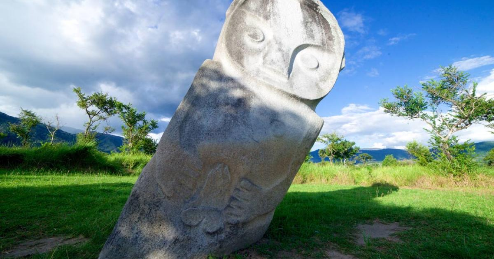
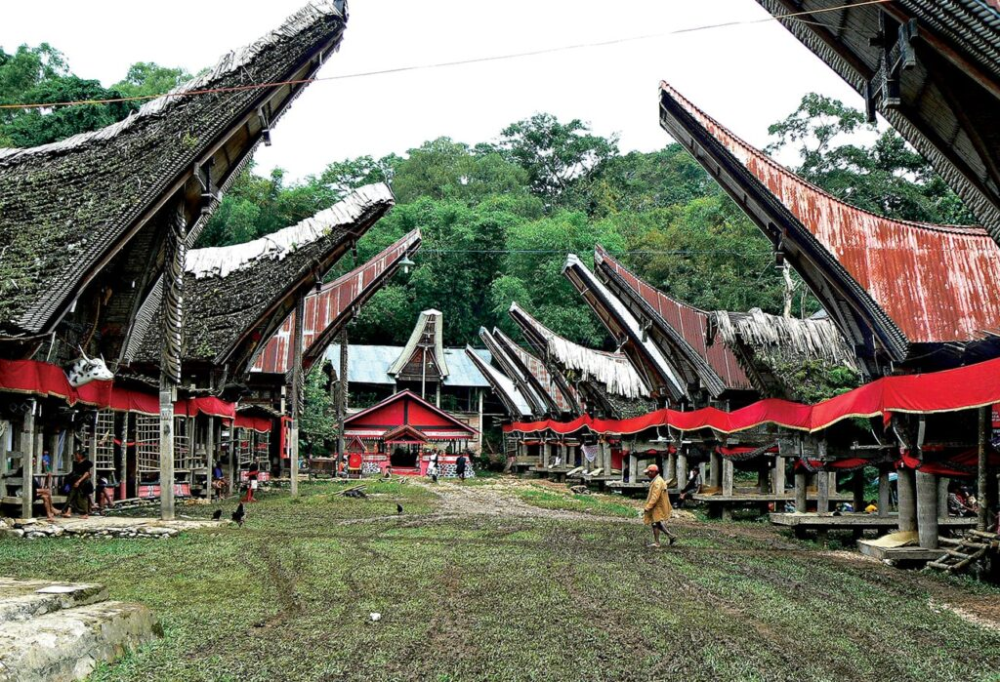
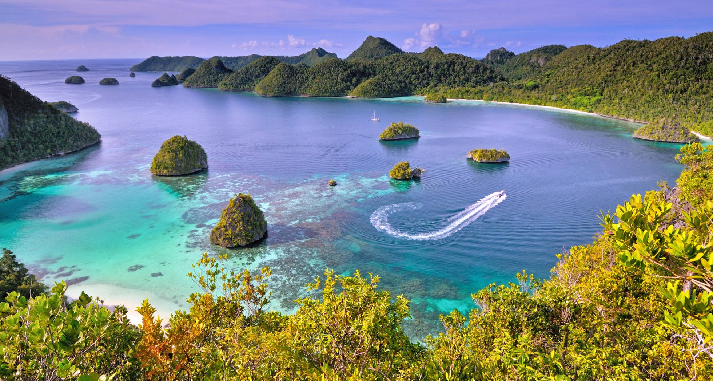
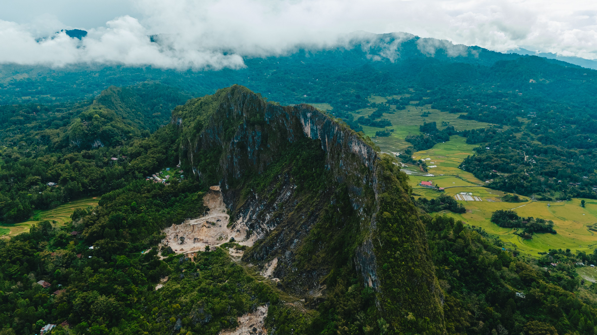

JELAJAHI KEINDAHAN NUSANTARA
Temukan tempat-tempat menarik dan keindahan alam yang tersembunyi di Pulau Sulawesi.
PILIH PETUALANGANMU
Berbagai tempat menarik untuk pengalaman perjalananmu.

Situs Megalit lembah bada, bukti nyata peradaban pra-sejarah di Sulawesi, yang juga menjadi warisan budaya.

Daerah yang terkenal dengan rumah adat Tongkonan, budaya tradisional, dan pemandangan pegunungan.

Destinasi wisata bahari yang terkenal dengan keindahan terumbu karang dan keanekaragaman biota laut.

Nikmati panorama alam, perbukitan, pantai, dan pemandangan laut yang menakjubkan.